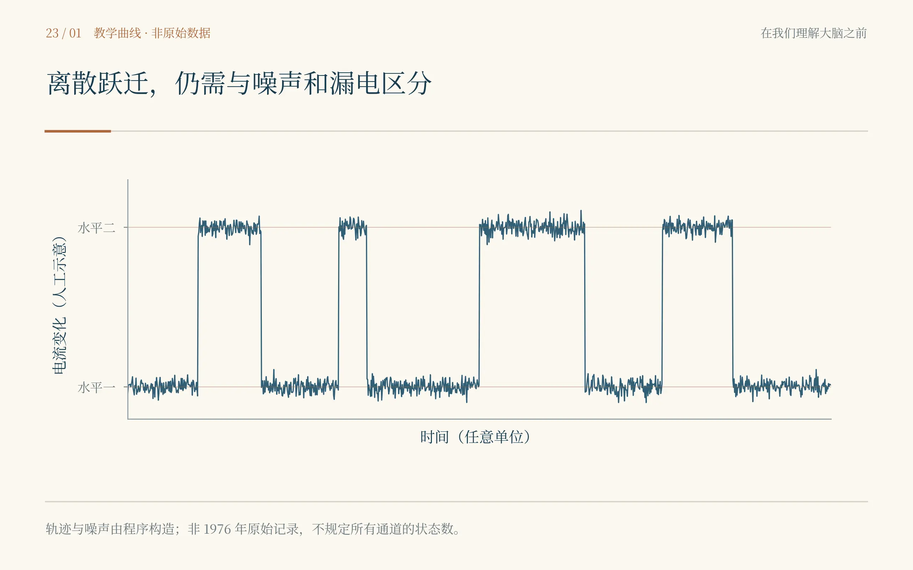
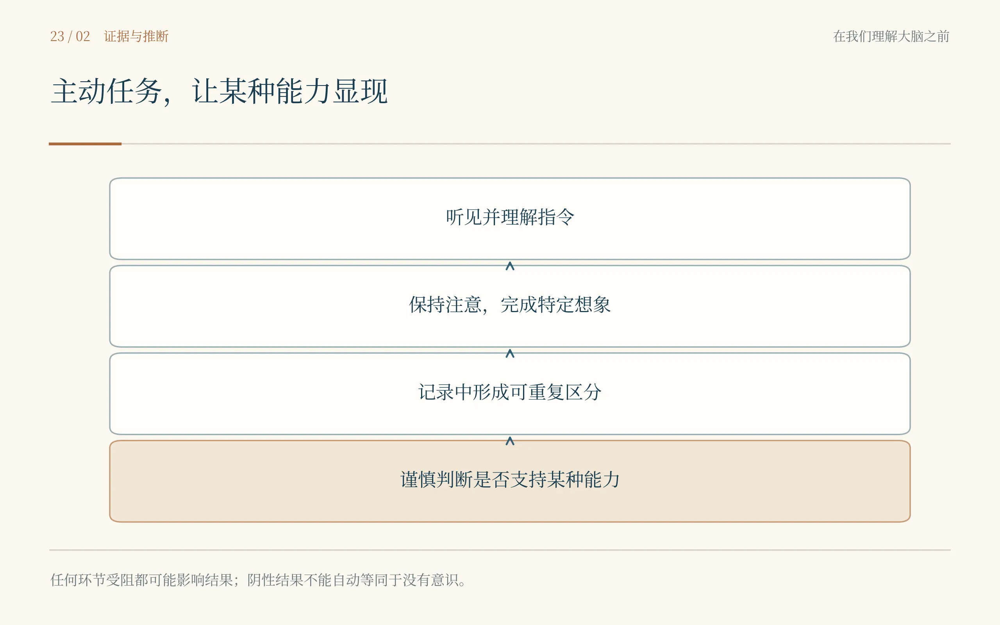
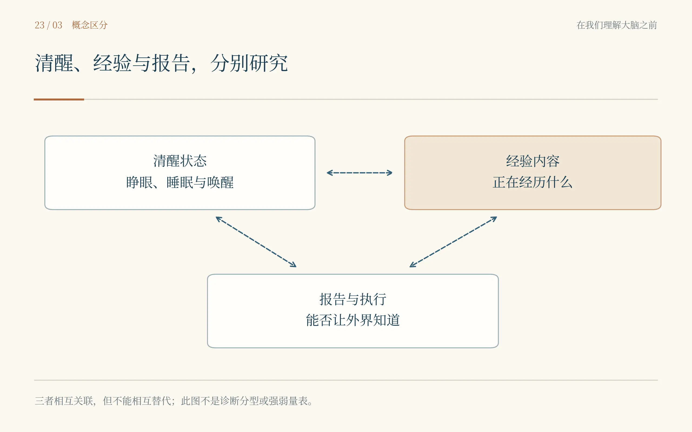
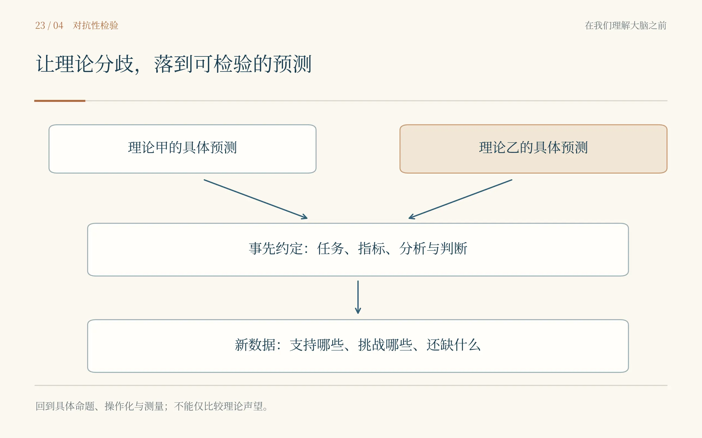

纸上写着“怎样让一个没有说出的回答被听见”。我以为下一站会是病房，睁眼却看见一张拥挤的实验桌。玻璃管细得几乎看不出来，电流记录中偶尔跳起很小的一格，又立刻归于平静。我站在旁边看了一会儿，开始怀疑自己是不是走错了年代。走了那么远，为什么又回到一条细线、一小段电流？
厄温·内尔没有理会我失望的表情。他在有些嘈杂的记录旁画了记号，保留了一段我本来准备略过的背景。贝尔特·萨克曼则把注意力放在标本和玻璃管的接触上。两个人说话不多，其中一人改变一点条件，另一人便回到曲线前。房间里最经常发生的事，是刚准备继续，又停下来检查。
我在霍奇金与赫胥黎那里见过整段膜电流，也见过怎样用模型解释它。模型需要某些门控过程，能够很好地组织观察，却不是直接拍到了每一扇分子之门。如今的问题更小也更难：能不能分辨单个离子通道开放时产生的电流，而不只看到许多通道活动的总和？
1976年，内尔与萨克曼报告从去神经支配的蛙肌纤维膜记录到单通道电流。它不是人的大脑，也不是一段记忆，却使原先主要从总体行为推断的微观事件，以离散电流变化的方式进入直接测量。后来关于膜片钳的技术改进，又使高分辨率记录能够在更多细胞和不同实验安排中进行。[23.1,23.2]
我问曲线上那一次跃迁是不是一个离子过去了。内尔看向我，摇了摇头。一个通道开放期间可以有许多离子通过，记录到的电流台阶不是逐一数过路的离子。我把刚写的比喻改掉，又一次发现，尺度越小，日常语言越容易把不同东西挤成同一件事。
萨克曼示意我听一段记录。背景中有波动，信号并不因为小就自动清楚。要分辨它，电极、封接、漏电、噪声、带宽和标本状态都重要。这里没有一个软件按钮能够先把“真正的通道”挑出来交给研究者。他们得知道装置可能造出什么样的假象，才有资格相信那段细小的跃迁。[23.2]

完整图注与资料说明
轨迹和噪声由程序构造，不是1976年原始实验，也不以此规定所有通道的状态数或电流幅度。参见[23.1–23.2]。有一次，曲线显得格外干净，我几乎觉得实验终于完成。萨克曼却重新看前后的条件，没有为了干净而忽略改变。他那天没有给我留下一句格言，甚至没注意到我在旁边失去了庆祝的机会。收工后，他整理器具，我替他把桌角的纸移开，两个人只说了一句别碰到那支管子。
1991年，两人因单离子通道功能方面的发现共同获得生理学或医学奖。回看那段历史，我终于不再觉得这是从“我”退回分子的岔路。它教会我一种非常重要的精确：一个问题可以被回答得很深，但不能因此宣称与它相连的所有问题也同时得到了解答。[23.3]
我把记录纸想象成一扇极小的窗。透过它，我们能够知道某一类分子事件怎样发生。窗越清楚，我越不该说自己因此已经看见窗外整座城市。一个通道开启与一个人疼痛、回忆或醒来之间，仍有细胞、回路、身体和情境。承认这些层次，不是在它们之间砌墙，而是在寻找每一座桥应该怎样建。
在克里克与科赫关于意识的研究设想中，我又遇见另一种把大问题缩小的努力。1990年的工作尝试把关于意识的追问推进到可研究的神经机制，视觉成为一个重要入口。它不是说只要找到某一种频率或某一处脑区，就可以不再解释体验，而是试图让原本容易停在争论里的问题获得实验落点。[23.4]
我翻着那些页，想到休伯尔与威泽尔。视觉刺激、细胞反应、人的报告，看似已经挨得很近，可注意、识别、作决定、准备说话和真正的经验仍可能混在一起。若在“看见”后面总安排一次按键，那么研究中多出的信号也可能属于按键前的准备，而不是看见本身。
桌上的钟已经走过一圈，我却没有继续往下翻。我试着把那几个词分开：醒着，有体验，能够理解指令，能够表达。它们在正常的一天里经常一起出现，到了睡眠、麻醉或严重脑损伤中，却未必整齐地一起改变。若把所有情形只排成一条从无到有的直线，可能会错过最需要区分的地方。
真正使这些词变得迫切的，是下一间医院。家属把椅子放得很近，讲话很轻，像怕打扰一位正在睡的人。病床旁的仪器没有替他们回答那个问题：里面的人取得了什么，还有没有办法把自己的反应送出来？我站在门边，突然不想再使用“什么都没有”的句子。
2006年，欧文、科尔曼、博利及同事报告了一位在行为评估中被诊断为植物状态的参与者，在接受特定想象指令时，表现出与任务相应的脑活动模式。想象打网球与想象在熟悉环境中行走，要求的不是仅仅被声音刺激，而是按不同指令维持不同的内部任务。[23.5]
我先以为关键是找到某块亮起来的地方。看到两种任务与时间安排以后才明白，关键更在于选择性的、与指令相合的改变。被动听到一个词可能引起响应；按要求在一段时间里持续一种想象，并在另一指令下切换，则支持更强的推断。不能把前者与后者随意合并。
准备实验的人反复核对指令的可听性与时间表。有人重新试耳机，有人检查记录，家属在门外等。没有人宣布机器已经看见一个完整的思想。实验要提供的是特定能力的证据，不是未经询问便取得一个人全部生活的权利。
2010年，蒙蒂与合作者进一步研究了这类自主调节脑活动的可能，并在特定参与者中探索利用两种想象任务回答问题。能在某次安排中形成可靠区分，才可能将其用于沟通。它不是把所有无行为反应者都变成能通过扫描对话的人，更不等于他们的身体功能已经恢复。[23.6]

完整图注与资料说明
阴性结果不能不检查中间条件就等同于没有意识；可靠信号也不是任意读心。参见[23.5–23.7、23.15]。我在走廊里听见有人轻声问，若没有信号，是不是就没有意识。这个问题比出现阳性结果时更难。听觉、语言理解、注意、疲倦、任务能力、信号质量和当时的状态，任何一处都可能使结果不出现。我们设计了一条让回答出来的路，路没有走通，还要弄清楚堵在何处，不能立即说路的另一头什么也没有。
反过来，检测到符合指令的脑活动，也不许可研究者随意猜测一个人的全部偏好和痛苦。能力的证据重要，具体的沟通内容仍需要验证。尊重不是用自己最希望的答案替别人开口，也不是因为一时没有获得回答，就把别人从谈话中删除。
2024年，博迪恩与多个中心的合作者将这种问题放到更大规模的研究中。部分在床旁无法按指令表现出明确行为的参与者，在脑电或功能磁共振任务中出现了认知运动分离的证据。研究使用的是特定纳入条件下的一组人，所得比例不能直接变成全世界所有意识障碍患者的统一数字。[23.7]
标准化的床旁评估同样不能被一张新图轻易替代。贾奇诺与同事关于昏迷恢复量表修订版测量特性的研究，代表了另一条使行为观察更系统的道路。反复评估、临床背景和不同工具取得的证据需要联系起来，而不是互相争夺唯一有资格解释一个人的位置。[23.15]
我忽然想起自己总担心论文不够新。新工具当然可以打开新的门，却不代表旧门里面什么都没做过。若把研究写成一台机器独自找回了一个人，床旁那些长期观察、护理、家属参与与临床判断就会像从来没有存在。一个人的处境通常需要许多人共同托住，不能只留下最好看的那幅图。
不是所有研究都要求参与者主动听懂并完成想象任务。马西米尼与同事2005年的工作，比较清醒与非快速眼动睡眠等状态下，皮层受到扰动后的活动传播。刺激之后的响应怎样扩展或局限，为理解脑内有效相互作用的状态变化提供了线索。这与单纯看静息时哪些点相关，又是不同的证据。[23.8]
卡萨利与同事2013年提出的扰动复杂性指标，尝试利用受刺激后脑活动的时空复杂性，研究不同意识相关状态。它减少了对外部感觉输入和明确行为反应的某些依赖，却并不使一个数字自动等同于某个人此刻具体体验到了什么。指标的判别能力、适用人群和误差仍须分别验证。[23.9]
我在记录旁边画了一条横线，想把清醒写在右边，把睡眠写在左边。刚写完就想起自己做过的梦：外面的人看我一动不动，我却可能正在另一个场景里走。2017年，西克拉里与同事将睡眠中的脑活动与唤醒后的梦境报告联系起来，使“睡着”和“没有经验”不能被简单划为同义。[23.10]

完整图注与资料说明
图为概念区分，不是诊断分型、意识强弱量表或患者的分类结果。参见[23.5–23.10、23.15]。梦也给测量带来自己的困难。醒后报告不可能是对刚才全部过程毫无损失的直接抄写，记住与忘记都在其中。可有局限并不表示研究只能停止。人们可以比较不同条件，改进报告与记录的时间安排，检验哪些结果能够重复。承认媒介的限制，是为了把问题问得更准确，而不是让问题永远留在雾里。
我开始理解一个以前经常被自己跳过的区别：取得与意识相关的信号，建立能够区分状态的指标，解释某种经验为什么出现，是相互联系却不完全相同的目标。一个方法在其中一项目标上成功，不能被自动兑换成另外两项也成功；也不应该因为还没完成全部目标，就否认已经得到的那一部分。
理论的房间和病房不同，但同样需要认真听别人说了什么。德阿纳、克尔兹贝格与尚热1998年的模型，将需要努力的认知任务与广泛可用的工作空间机制联系起来。托诺尼2004年的理论，则从信息整合等问题出发提出解释框架。它们不是同一句话换两个名字，各自承担着不同的主张和需要面对的困难。[23.11,23.12]
我最初读它们时，也想赶快挑一边。选好一个理论，以后每看见结果就知道应该放在哪里，似乎会省掉许多犹豫。可斯佩里的挡板、洛伦茨的历史、莫尼兹的奖项已经让我无法那么放心。我更想知道，一种理论会在什么样的结果面前承认自己需要改变。
这件事在2025年发表的一项对抗性合作研究中变得格外具体。不同理论支持者事先参与约定可检验的预测，研究团队结合不同测量方式，比较全局神经工作空间与整合信息理论的相关预测。结果既呈现与部分预测相合的证据，也对双方某些关键预期提出挑战，并没有产生一个可以不加条件宣布的最终胜者。[23.13]
我坐在屏幕前，看见其中最值得留下的并不是谁输了，而是研究者愿意在结果出来以前，把哪些观察会支持、哪些会构成困难说得更清楚。这样，解释便不那么容易在每一种结果之后都自动获胜。理论仍可修改，但修改发生过，就该能在记录里找到痕迹。
后续由纳卡什等人发表的回应又表明，对理论怎样被操作化、任务究竟触及哪种主张，研究者仍有分歧。回应也需要回到具体方法和预测，而不是只凭谁在一个领域里更有声望。一次对抗性研究不会自动消灭争论，它能够做的，是让争论不再只有各自熟悉的口号。[23.14]

完整图注与资料说明
研究结果及理论回应均需回到操作化和测量；此图不表示2025年的研究已经终结意识理论争论。参见[23.11–23.14]。我想到第一章的哥尔基与卡哈尔。他们共享奖项，却不共享同一个解释。如今的研究工具已经完全不同，某些困难却仍能认出旧的形状：人容易爱上自己曾经借以看清世界的理论，也容易把修正它误认为否定自己。真正值得尊重的，不是一个人从不改口，而是他愿意让证据参与决定什么时候该改。
这并没有使我得到一套能把意识全部写清楚的公式。我也没有因此失望到不愿再研究。眼前已经有可以继续推进的工作：怎样区分报告与体验，怎样在不同状态下测量整合，怎样验证跨任务和跨人群的预测，怎样让不能说话的人更有机会表达。未知并不是一块均匀的黑色，它已经被许多具体的问题分出边缘。
从医院出来时，天色将暗。我看见一位家属把外套搭在椅背，伸手替病床上的人调整衣领。没有一张图告诉我那个人此刻的全部经验，可这种没有全部答案的处境，并不妨碍我们认真对待他的身体和可能的感受。证据的谨慎与照护的温柔，不需要互相取消。
我把本子最后几页翻到前面。神经元、脉冲、通道、地图、记忆、血流、选择与同意，一页接着一页。我以前以为，走到最后会有人拿走这些不完整的页，交给我一个完整的答案。如今这些页仍然不完整，却比任何一句未经检验的大话更值得带回去。
有人在走廊另一端叫了一声。我抬起头，以为是在叫我，随即发现他在叫另一个人。我坐下，等那种熟悉的灯光变化。没有新的科学家走进来，手机倒先亮了。屏幕上是一条很久以前就应该读到的消息。
“明天组会，你那张图再讲一遍。”
我盯着它，忽然听见了自己实验室的空调声。